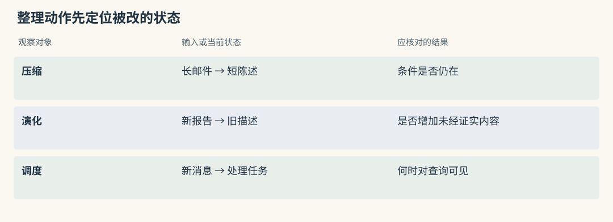
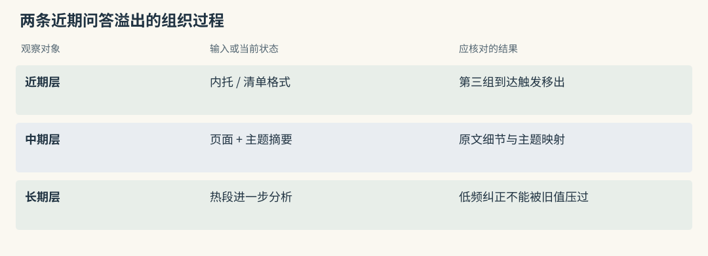
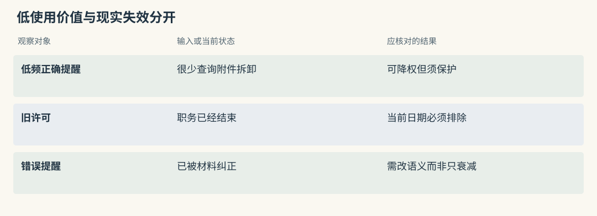
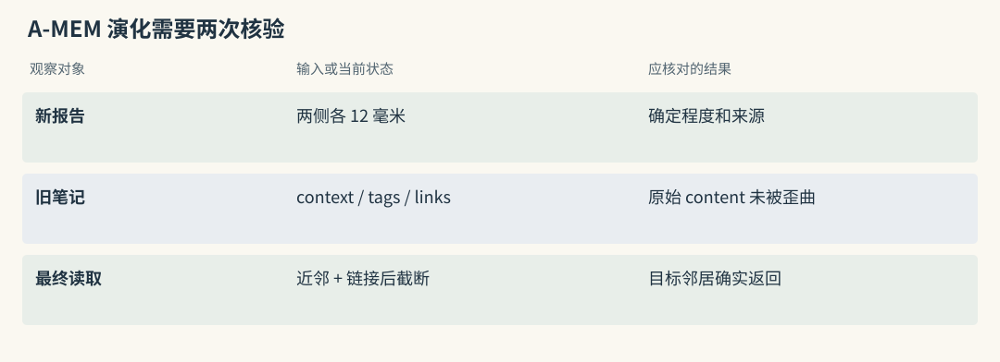
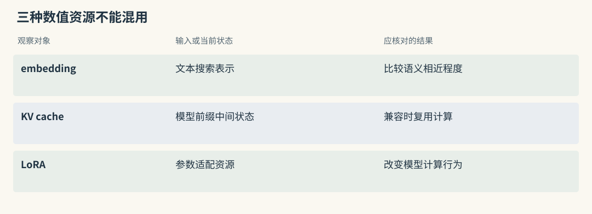
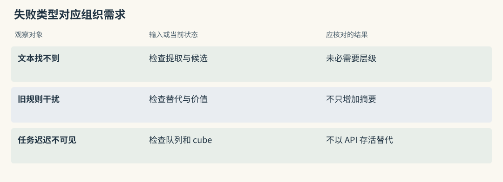
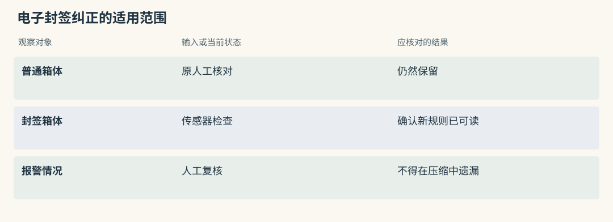
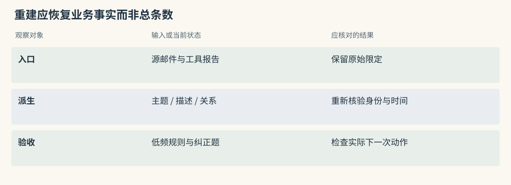
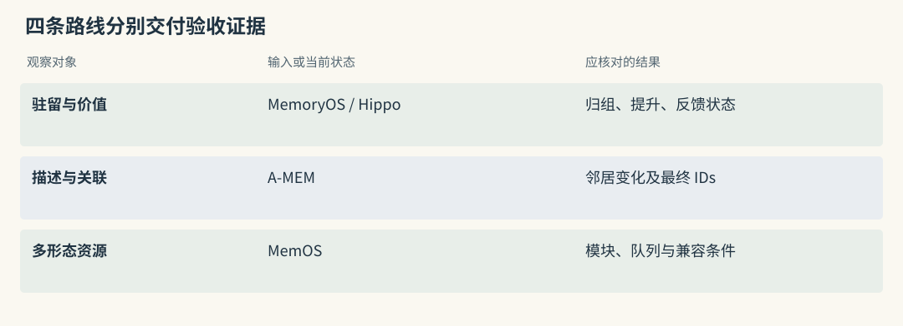

Memory OS 与生命周期路线
四个项目，都在“整理记忆”，整理的却不是同一件东西
借展助手积累了半年资料，出现四种压力：近期邮件装不下，过往装箱提醒反复出现，新鉴定报告改变了旧笔记的解释，文本与模型资源需要统一调度。虽然都可称作整理记忆，它们改变的状态不同。
MemoryOS 组织对话的驻留层，Hippo 调节记录价值，A-MEM 修改笔记描述与关联，MemOS 管理多种资源形态。选用之前，应说清希望哪项状态发生变化。把层级、寿命、描述和模型参数混成一个“学习”开关，会让测试既难解释也难回滚。
以下算例围绕青釉执壶借展，均为教学推演。涉及源码行为时限定到本书本地快照，不声称做过 GPU 缓存或远程模型实验。
源码路径与适用范围（选读）

Mem0：组织主要发生在事实提取和实体关联
普通推断把邮件压成短事实，并把实体关联到 memory IDs。近期消息用于理解“仍照上次”，已有事实帮助减少重复。它没有同时建立短、中、长期 pages，也不会把记录加载为 KV 或 LoRA。
外层若增加主题队列、热度或周期摘要，应为这些动作单独保存版本与来源。这样以后发现装箱提醒丢失，才知道错误发生在事实提取还是新增整理任务。
Graphiti：演化主要发生在身份、关系和摘要
新 episode 会触发实体归一、关系去重或失效以及摘要更新，可选社区还会聚合更大区域。这些动作改变图对象和派生视图，不是按访问频率搬运问答。
藏品借展条件变更时，应直接检查旧关系区间与新来源。把 summary 变短不能代表事实已纠正，把社区建立成功也不能代表长期画像已经形成。
MemoryOS：近期问答装满后，搬到按主题组织的页面
设近期容量为两组问答：第一组讨论执壶内托，第二组讨论借展清单格式，第三组新问答到达后，最旧内容不能一直占据近期层。MemoryOS 将移出的问答转为 page，再判断连续性，形成主题摘要与关键词，并归入中期 session。
这里的 session 更接近主题容器。两次不同聊天都讨论内托，可被组织到同一主题；一次长聊天也可能拆成多个主题。页面保留细节，主题摘要用于粗筛，所以摘要若漏掉缓冲层，包含正确尺寸的 page 可能根本不进入下一阶段。
访问更新热度，热段达到条件后进一步分析，形成长期画像或知识。热度提供处理优先级，不证明内容真实。一次明确的“旧内托方案已停用”即使不热，也应由当前会话直接携带，避免旧长期知识覆盖新纠正。
源码路径与适用范围（选读）

Mem0：近期十条消息是提取上下文，不是 page 层
get_last_messages(..., limit=10) 限定的是抽取参考窗口，不表示第十一条消息自动形成主题页。消息持久化、近期窗口和长期组织应分别记录。
如果馆内希望把多次装箱经历归为主题，需要另行生成页面或摘要，并保留原邮件映射。不能因为普通写入参考了最近十条话，就宣称已经实现 MemoryOS 的驻留提升。
Graphiti：previous episodes 与主题提升不同
previous episodes 给当前提取提供材料，saga 可以关联经历，社区可以整理实体邻域。它们有组织作用，却不采用相同的容量与 heat 晋升协议。
借展系统若主要需要保留事件顺序，应检查 episode 与 saga 的身份；若需要容量触发的主题归档，才对比 pages。结构名称相似时，仍应追实际写入和读取动作。
Hippo：内容可以不变，影响力随时间和结果变化
一条提醒写“运输前核对减震内托”，正文可以多年不改，影响力却随时间和使用结果变化。Hippo 为记录维护强度、寿命、召回与 outcome 等状态，允许按价值调整后续排序。
仅看指数衰减项，假设半衰期为六天，初始值为 1，十八天后为 0.125。这个手算忽略了强化、保护和其他系数，不能当成完整实现输出。若提醒确实帮助发现包装缺口，可以记录好的 outcome；仅被检索命中，只能算一次选择行为。
sleep 是集中巩固入口，可能去重、合并或处理低价值内容。应读实际报告，确认发生了降权、归档还是删除。少用的低频安全规则仍可能重要，应有保护与反例测试。
源码路径与适用范围（选读）

Mem0：价值变化需要业务评分配合
普通 search 并不会因为 metadata 附了 half_life 或 outcome，就自动采用 Hippo 的 strength 公式。应用可增加价值重排，但需明确代码位置并独立测收益。
到期隐藏与连续衰减也不同。前者按政策在一个时点改变可见性，后者逐渐改变排序信号；两者都不能替代错误事实的语义纠正。
Graphiti：事实时间与访问价值应分字段
invalid_at 表示现实关系结束，不能拿来写“最近没人查询”。陈策仍有许可权但很少使用时，其关系仍应有效；职务已结束则必须在当前查询排除。
访问价值可另存并影响候选顺序，不改事实区间。把热度与有效性混用，会使历史查询错误地认为真实关系曾经失效。
A-MEM：新笔记可以改变旧笔记的理解线索
旧笔记写“执壶内托需要调整”，新报告说明“原计算漏了两侧各 12 毫米缓冲垫”。A-MEM 可以为新笔记生成 context、keywords、tags，再查相关旧笔记，决定建立 links 或更新邻居描述。
教学预期是保留旧记录当时的不确定性，用新描述帮助下次搜索“缓冲垫”找到它。如果新报告只是猜测，派生描述也要保留猜测；不能将推测回写成当时已确认的根因。
关联能否改善读取，还取决于索引刷新和最终截断。search_agentic() 先取近邻后补链接，最后 [:k] 可能把追加邻居全部截去。因此要记录演化对象和最终返回 ID，两者不能互相代替。
源码路径与适用范围（选读）

Mem0：更新正文会重建检索描述
显式更新会改变正文、hash、词形与 embedding，并重新维护实体链接。它直接修改事实内容，与 A-MEM 更新邻居的 context 或 tags 不同。
若只是为旧装箱报告补发现线索，应把原始陈述与新解释分开。否则一条后来的鉴定意见可能被写成旧事件的原始事实，来源和时间都变得难以解释。
Graphiti：summary 更新与时间边维护同时存在
新关系会参与节点摘要更新，也可能影响旧边有效性。摘要负责压缩与发现线索，事实边负责表达特定关系状态，两者需要分别审计。
如果报告撤回旧的裂纹原因，既要查旧原因边，也要查 summary 是否仍保留确定语气。图中新增正确边而摘要继续使用旧结论，仍会污染热读取路径。
MemOS：先认清管理的是文本还是模型资源
MemCube 可按配置启用文本、激活、参数化和偏好模块。文本事实能被检索、引用与逐条治理；模型内部资源的兼容条件与删除方式不同，不能只因为都叫 memory 就采用同一接口想象。
KV cache 保存特定模型处理 token 前缀时的中间键值，兼容时可减少重复计算。它不是“内托缓冲 12 毫米”这条可按词搜索的教训。LoRA adapter 改变模型运算，需要匹配基础模型与层形状，也无法像删除一条文本记录那样移除其中某项知识。
scheduler 将消息与用户、cube、任务状态关联，按策略立即处理或排队。若队列尚未完成，查询仍可能读到旧文本。试用时可先只启用文本模块，把处理状态和读取窗口跑清楚，再讨论模型资源实验。
源码路径与适用范围（选读）

Mem0：embedding 向量不是模型激活记忆
文本 embedding 是给搜索比较使用的表示，无法直接作为生成模型的 KV cache。存储一个数值数组并不意味着保存了模型上次的全部计算状态，也没有修改参数。
删除事实向量只处理外部检索数据；模型 provider 是否保留请求，需按服务政策单独审计。不能以本地库已清空承诺模型资源或供应商副本同时遗忘。
Graphiti：图索引也不管理参数化知识
图节点或 fact embedding 同样是外部检索结构。Graphiti 使用模型做抽取，并不因保存这些向量而管理 LoRA 或模型激活。
若应用另接缓存或 adapter，应分别注明基础模型、资源版本和调用位置。图服务的删除接口也不负责清理这些新增资源，不能让它承担没有定义的跨形态删除合同。
把四条路线放回你的实际问题
用失败定位组织方式：近期窗口丢细节，检查页面提升；旧提醒干扰，检查纠正与价值；新报告难以找到旧经历，检查描述和关联；多资源任务积压，检查容器与调度。
别先安装四套机制再寻找收益。十几条经过审核的内托规则，可能只需明确当前版本和直接读取；若正确文本根本没保存，层级再多也无法恢复。可以先保存静态对照，再按实际增长逐项增加机制。
源码路径与适用范围（选读）

Mem0：先判断问题是否还在候选层
先判断教训正文是否正确、身份范围是否正确，再看语义池和全文信号。找不到一条事实，不足以证明缺少长期层。
当确实需要巩固时，新增任务应保留源 ID 和独立版本，以便对照未巩固事实。这样可看清压缩是否删掉“仅适用于该内托批次”等关键条件。
Graphiti：需要变化关系时才用边维护收益
同名部门和历史许可属于关系维护问题，resolution 与时间边有直接作用。若问题只是“内托”与“衬架”措辞不同，应先比较词和向量，而非默认增加图层。
采用成本包括结构化抽取、索引和 driver 运维。只有对应失败得到改善，这些新增状态才有保留价值；图并不自动解决访问热度或长期巩固。
同一条纠正进入四种系统，会发生什么
旧规则要求“出库前人工核对每个减震垫”，新通知说明“带电子封签的箱体由传感器检查，报警后再人工复核”。这是带条件的流程纠正，不是简单删除“人工”二字。
MemoryOS 可先把通知保留在近期层，再转 page、主题段和长期知识。长期分析尚未发生时，当前消息应优先表达新条件，防止旧画像要求所有箱体重复检查。
Hippo 可以降低旧规则影响，但降权无法表达“仅带封签”和“报警后人工复核”。还需保存新规则与替代范围，避免旧规则在高相似查询中重新出现。
A-MEM 可把新旧笔记相连，补充旧描述，但不应让旧正文看起来一直使用电子封签。MemOS 文本路径则要确认目标 cube 和处理任务已更新。存在 KV 或参数化模块，不意味着这项业务规则自动同步进模型权重。
源码路径与适用范围（选读）

Mem0：自动检查的新规则不会自动取代旧卡
追加新通知不会必然使旧卡退出搜索。审核后可以更新当前规则，或维护显式版本与适用条件；旧规则继续服务历史查询。
若只降低旧卡分数，读者仍可能看到互相冲突的要求。需要在组装时说明新通知只替代电子封签箱体的检查方式，普通箱体的人工要求仍有效。
Graphiti：纠正要检查失效边和新增条件
新 episode 应表达传感器检查、适用箱体和报警复核条件，再核对哪些旧边被结束。若解析把所有人工检查关系失效，变化范围就过大。
节点 summary 也要保留普通箱体与电子封签箱体的区别。只查看新增边而不查看失效集合，会漏掉最危险的误更新。
分层省下的工作，可能会在维护时回来
主题摘要减少在线扫描，却增加摘要重建工作；强度衰减减少旧噪音，却可能隐藏低频关键提醒；动态描述减少人工标签，却可能逐渐偏离原报告。每种组织都把工作转移到不同时间和组件。
可以选一条很少被查询的“搬运前取下活动附件”规则，和常见的清单格式一起回放。新机制若只提升热门内容而漏掉附件要求，平均命中改善也可能伴随任务风险。
重建依赖原始材料与派生映射。如果只剩“包装须谨慎”的高层摘要，无法还原缓冲尺寸和例外。应为原文保留、整理版本和删除传播制定一致政策，而非无限复制所有内容。
源码路径与适用范围（选读）

Mem0：重建不能只依赖摘要
保留入口邮件、工具报告和提取版本，才能在提示修改后重建卡片。SQLite 消息历史不一定包含完整工具轨迹，高层摘要也不保留全部限定。
删除来源时还要追外层巩固内容。若原邮件已删除，常驻摘要仍含联系人或私人备注，缩短输入的优化就变成另一份泄漏副本。
Graphiti：重建要核对实体与时间是否重现
按同一批 episode 和顺序重建后，应比较规范实体、关系支持和有效区间，而非仅看节点总数。模型版本或输出随机性可能使别名合并与时间判断不同。
summary 可重新生成，但无须逐字相同；验收应检查许可主体、业务条件和来源是否一致。重建成功运行并不能自动证明旧错误全部消失。
动手检查
给四条路线各写一条可验证的更新断言：某 page 被归入内托主题，某条记录 strength 变化，某邻居 context 增加缓冲层线索，某 cube 的任务从排队变为完成。
然后加入电子封签纠正，说明哪项更新仍不足以让下一次操作遵循新条件。
答案提示：热度、链接、强度和调度状态都需要与正文及实际读取一起检查，“会学习”本身不能作为验收结果。
实现细节与复查入口（选读）
MemOS：把多形态记忆放进资源容器
MemOS 以资源容器组织多形态记忆。Plaintext 是外部文本或图知识，activation 是模型计算状态，parametric 是参数适配资源。三者可以统一登记，但不能统一按文本近邻来使用。
借展事实主要走 plaintext，重复长前缀的计算复用才涉及 activation，专门能力适配才可能涉及参数化模块。测试时应分开衡量证据质量、计算节省与能力副作用。
MemCube 怎样封装内容
GeneralMemCube 依据配置通过 MemoryFactory 建立各模块，标记 uninitialized 的后端可以没有实例。因此 cube 的身份与配置存在，不代表 text、act、para、pref 全部启用。
load 检查 schema，dump 要求空目标目录，并调用各模块自己的序列化逻辑。这是有类型资源导入导出，不是模型状态跨任何环境可移植的保证。KV 依赖模型和 token 序列，LoRA 依赖基础模型及参数形状，应在资源清单中一并记录。
文本记忆的写入与调度
reader 处理文本，textual backend 存取结果，MOS 管理可访问 cubes，scheduler 安排异步处理。存储回答当前保存了什么，调度回答任务何时被处理，两种状态都影响用户看到的结果。
queue_ops.py 的 submit_messages() 关联 trace、用户、cube 与时间，登记任务后按 priority 分即时与排队路径。local 或 Redis 队列还会按 user、cube、label 分组派发，记录 enqueue、dequeue 与等待。
监控不能只测 search 存活。应同时观察积压、失败和处理延迟，确认刚到的纠正有没有完成文本更新；未完成时由当前会话提供新材料，避免最终一致性窗口造成旧规则误用。
三类记忆怎样被使用
plaintext 可以检索并引用“缓冲垫两侧各 12 毫米”，删除也有明确对象。activation 路径加载兼容的 KV，测量的是前缀重复计算是否减少，不是找回哪条事实。parametric 路径通过 adapter 改变模型行为，引用与精确遗忘都更困难。
若应用只测试文本，就应只报告文本结果。容器统一的设计目标不证明另两类资源同样成熟，也不能凭一次文本 QA 结果推导模型缓存或 LoRA 的收益。
插件里的分层与核心框架的区别
宿主插件可按轨迹、策略、世界模型或 Skill 组织内容，属于语义层次；plaintext、activation、parametric 属于资源形态。插件的 L1、L2、L3 不能逐项映射成这三种模型资源。
README 中 LoCoMo、LongMemEval 与 OmniMemEval 的数字应按对应入口阅读。优先核对实际启用的文本 backend、等待协议和失败恢复，不能把插件宣传与核心框架所有模块混成同一实测。
MemoryOS：短、中、长期对话如何提升
MemoryOS 将近期问答、中期主题与长期画像或知识联系起来。它主要维护显式外部信息，不负责 MemOS 的 KV 或 adapter 资源。
学习时应锁定具体目录。memoryos-pypi/、Chroma 包装与 MCP 版本可能有不同参数和存储方式，不能混用某版的默认容量解释另一版的结果。
短期满了以后发生什么
updater.py 中容量触发处理会弹出旧问答，生成带 ID、时间、前后连接与 metadata 的 pages。连续性判断和主题摘要帮助把页面归入已有或新建的 session。
一批问答可含多个主题。把它全部标成某次聊天窗口会掩盖页面归组的真实语义。应检查原问答到 page、page 到主题的映射，并验证“只此一箱”的限制仍在可读取内容里。
heat 与长期提升如何区别
mid_term.py 维护访问次数、时间与热度，查询命中会影响后续分析优先级。evict_lfu() 是容量相关的另一项动作，不应将所有淘汰与提升描述成同一 LRU。
长期分析生成 profile、private、assistant knowledge 等，画像可被整合替换，知识另行追加。错误晋升可能让电子封签例外变成全部箱体默认，因此要测一次性条件、明确纠正和冷但重要的规则。
读取不是把三层全倒进 prompt
retriever.py 并行查询中期页和长期知识，中期先筛主题，再给页评分，使用有限 heap 留住跨主题高分结果。长期画像在主流程中另外参与组装。
粗筛有利于减少细节扫描，也会使摘要漏项向下传播。页面条数上限不等于 token 上限，长页仍需截取与预算。正确页进入候选后，还要看它是否实际进入模型输入。
适合学什么
容量触发、页面连续性、主题合并、热度与长期分析提供了一组可阅读的状态机。可先关闭长期提升建立对照，再观察提升改善哪些题、误改哪些字段。
项目 F1、BLEU-1 结果与检索 Recall@k 计分单位不同。快照近期无提交，生产化还要承担并发、权限、数据导出和版本维护，不宜把论文机制清楚直接等同于上线成熟。
Hippo Memory：让记忆价值随时间与结果变化
Hippo 以本地 SQLite 和 Markdown mirror 组织 buffer、episodic、semantic 等内容，并有图、轨迹和不同重排实验。其学习价值是把使用价值变化拆成时间、召回、结果和巩固动作。
镜像文件是否可反向编辑应遵循项目约定，不能因为它是 Markdown 就当作 Basic 的权威源。生命周期试验还需隔离状态，否则重复查询会改变后续对照。
strength 不是一个永久常量
calculateStrength() 结合经过时间、half-life、召回和其他因素，pinned 内容有保护。时钟、session 与 adaptive 路径也不应混成同一公式。
仅演示衰减可用 0.5 ** (elapsed / half_life)：六天半衰期经过十八天得到八分之一。实际 reward_factor 可调有效寿命，其他系数与边界还会改变结果。查询触发强化可能改善可用性，也可能让误召回的旧规则越来越强。
outcome 与召回次数是两条信号
applyOutcome() 累积正负结果，reward factor 影响寿命。命中一次表示系统选中了它，成功应用则是另一个事实，两者应分别记录。
提醒帮助避免一次内托遗漏，可给正反馈；错误规则导致重复开箱，应给负反馈并纠正正文。单纯加速衰减仍可能让错误内容在高度相关的查询中出现，因此价值更新不能代替替代关系和现行版本。
sleep 如何巩固和清理
consolidate.ts 组织价值、重复、相似合并和高层内容处理，具体阶段依配置启用。应查看实际改动、来源和恢复路径，不以 sleep 名称类比人脑学习效果。
多次经核验的相似经历可支持一条稳定提醒，单次未确认观察则应保留为观察。巩固后的 semantic 内容离原始轨迹更远，必要时必须能回到工具报告和审核意见。
当前源码里的物理评分实验
physics.ts 用单位球面粒子表达记忆，mass 来自 strength 和召回等因素，query gravity 使用正 cosine 的平方等启发式。巩固还包含相似吸引、冲突排斥、阻尼与聚类放大。
这些术语描述工程评分规则，不是神经机制验证，也没有训练 embedding 模型。应分别关闭 physics、decay 和 recall boost 比较，且每组从干净状态启动，避免上一轮强化污染结论。
风险与诚实的负面结果
维护快照近三十天只有一位作者，接替和漏洞响应需要考虑。项目公开撤回过无法正式复现的 sequential-learning 幅度，这份负面证据应与积极结果一起保留。
Jev 的检索排序提升也没有稳定超过本地 cross-encoder 的最终回答结果。适合进行本地生命周期实验，不代表每个实验分支都能作为生产默认。采用时先定义误遗忘和错误强化的停止条件。
A-MEM：每条笔记都可以改变关联网络
A-MEM 的 MemoryNote 除原始 content，还含 context、keywords、tags 与 links。新笔记可以改变附近旧笔记的发现线索，因此新增操作也可能有邻居副作用。
借展报告中的新解释若进入旧笔记描述，必须保留其来源和确定程度。原文、派生 context 与关联边不应在审计中被当成三份独立观察。
写入时的两次理解
memory_system.py 中 analyze_content() 生成描述，add_note() 建立新对象，process_memory() 检索相关邻居并请求 evolution decision。strengthen 可增加链接或标签，update_neighbor 可改旧 context、tags。
假设新报告补充“两侧缓冲各 12 毫米”，邻居描述可加入缓冲尺寸线索，让旧内托笔记更容易被搜到。输出合法 JSON 只保证形状，不能证明它未把“预计”改为“确认”。演化日志应保留前后差异供回放。
关联检索与本地实现限制
search_agentic() 先从 Chroma 取近邻，再尝试追加 links，最终返回 memories[:k]。初始列表占满时，链接邻居可能没有名额。应将候选追加和最终打包列表都保存，不能用“建了 links”证明收益。
邻居属性改动后，持久化与索引是否刷新也需沿 add、consolidate、update 路径核对。长期缺少提交的原型适合研究，若服务化还需补权限、删除、演化审计、并发与模型错误处理。
四种演化不要混为一谈
四种演化可以分别写成资源变更、驻留提升、价值调整和描述关联更新。共同回放重复、例外与纠正，但还要针对各自状态设计验收。
减少上下文长度只是中间收益。电子封签纠正后是否仍重复要求人工检查，低频附件规则是否消失，以及错误出现后能否恢复，才决定组织方式适不适合借展助手。
分层方案的共同点与不能迁移的参数
MemoryOS 的容量、主题相似度、热度和读取限额分别控制不同动作；Hippo 的 half-life 以时间为单位；A-MEM 的 k 是局部邻居数量。把默认数字搬到另一个项目，不会保留原有机制。
Memobase 的 buffer 用于画像批处理，TencentDB 的层级用于归纳与资产使用，Letta core 与 deferred 以常驻和按需区分；MCP 的 horizon 与 Cognee 的 gate、watermark 又反映处理窗口和进度。它们可以借鉴分层思路，不能共享所谓晋升参数。
模型资源还需另看兼容。稳定 prompt 前缀可能提高上游缓存利用，但不等于能导出任意 KV；Hermes memo 缓存的是应用小决策，也不等于 activation。没有兼容证据时，不应把 adapter 或缓存当作普通文本资产迁移。

横向查阅表（选读）
本章对照结论
| 路线 | 实际变化对象 | 建议保留的中间证据 | 独立失败检查 |
|---|---|---|---|
| MemOS | 模块资源和调度任务 | cube 配置、task 与 trace | 排队未完成、模型不兼容 |
| MemoryOS | pages、主题、长期字段 | 归组映射与晋升差异 | 摘要漏项、低频纠正延迟 |
| Hippo | strength、寿命、反馈与巩固结果 | 时间、recall、outcome 分开 | 误强化、关键规则被降权 |
| A-MEM | context、tags 与 links | 邻居更新前后及返回 IDs | 描述漂移、索引未刷新 |
| Memobase | buffer 到 profile、event | flush 状态和字段差异 | 并发与原文保留 |
| TencentDB | 多层派生及资产版本 | 生成版本与来源映射 | 权限、状态回调与旧注入 |
| Letta Code | core 与按需文件 | commit、索引与编译结果 | 修改未生效或规则误写 |
| MCP、Cognee | 巩固阶段或改进管线 | horizon、gate 与游标 | 阶段漏跑、跨存储部分成功 |
| Hermes memo | 精确输入的小决策 | 规则版本、命中与 TTL | 旧结论复用，不是事实提升 |
| Graphiti、HippoRAG、Basic | 事实或笔记连接 | 来源与读取路径 | 连接存在不表示 OS 资源管理 |
| Mem0、Beacon | 短事实或原始活动 | 写入与捕获结果 | 不自动继承上述晋升协议 |